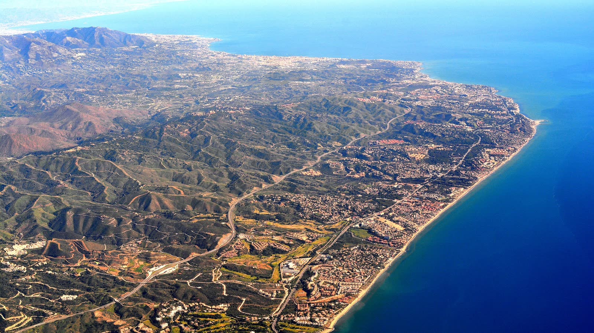

Independencia
No vendemos inmuebles ni cobramos comisiones. Nuestro único interés es que usted tenga la verdad.
Quiénes somos
Las decisiones que más pesan —dónde vivir, dónde invertir, dónde establecerse— se toman demasiadas veces a ciegas. Y muchas salen mal no por mala suerte, sino por falta de información.
Por eso existe ROMVILL.
El origen
Detrás de ROMVILL hay años de experiencia real en dirección de seguridad, análisis de riesgo e inteligencia, en entornos exigentes y de alto nivel, en España e internacionalmente. Una trayectoria que nos enseñó una lección que se repetía siempre.
Cuando proteges a personas y evalúas amenazas, aprendes que la diferencia entre acertar y equivocarse casi nunca es la suerte. Es la información.

El mayor riesgo no es el que se ve, sino el que se desconoce.
La diferencia
Aplicamos esa misma disciplina al análisis del territorio de la Costa Mediterránea —Alicante, Málaga y Marbella—: metodología de inteligencia, fuentes oficiales contrastadas (OSINT) y verificación directa sobre el terreno. No somos una inmobiliaria ni un buscador de datos genéricos.
Estudiamos una zona con el mismo rigor con el que se evalúa un entorno antes de una decisión crítica: sin atajos, sin intereses ocultos y con los pies en el suelo.
Nuestros principios
No vendemos inmuebles ni cobramos comisiones. Nuestro único interés es que usted tenga la verdad.
Cruzamos fuentes oficiales con comprobación presencial. Datos, no rumores.
Confidencialidad absoluta. Forma parte de nuestro oficio.
Le damos información para decidir, no para impresionar.
Para eso estamos: para que usted decida con criterio, no con esperanza.
— El equipo de ROMVILL
Solicitar mi informe